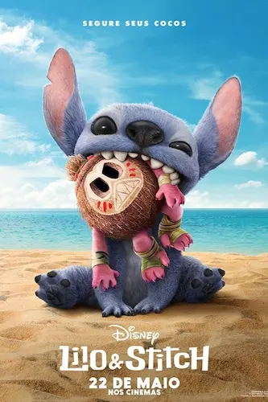
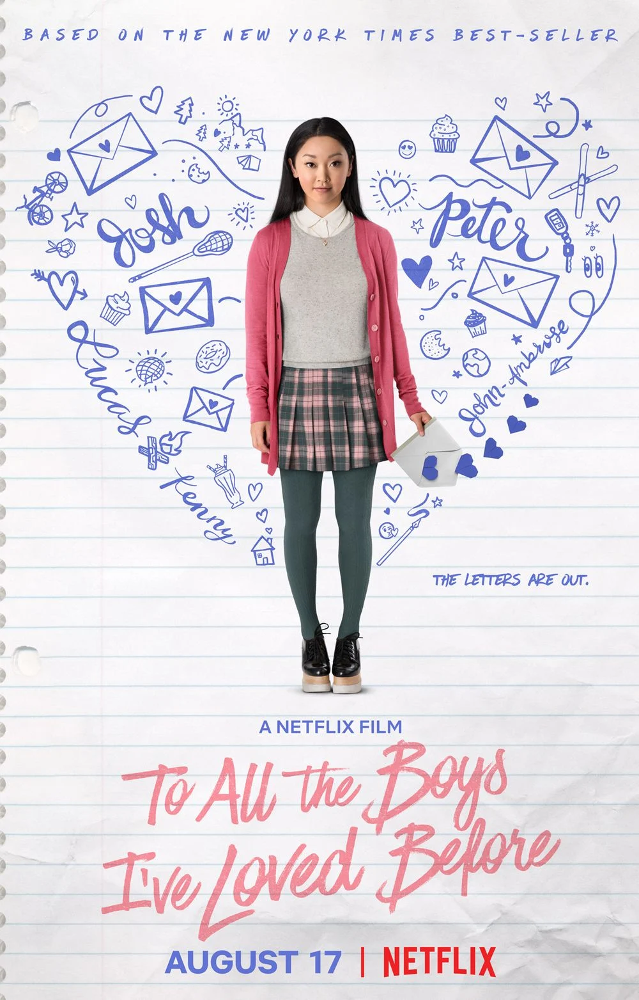
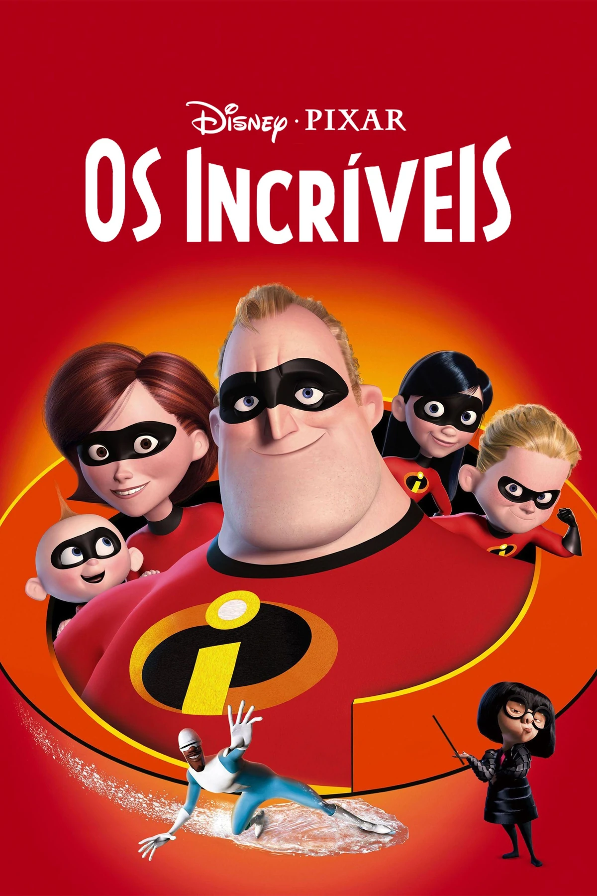
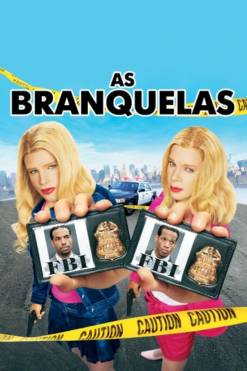

Gênero: Ação, Aventura, Ficção Científica
🕷️ Em Homem-Aranha: Longe de Casa, Peter Parker viaja para a Europa com seus amigos da escola para aproveitar as férias e se aproximar de MJ. No entanto, ele logo se vê enfrentando criaturas elementais que ameaçam várias cidades. Surge então Mysterio, que se apresenta como um herói de outra dimensão pronto para ajudar. Peter precisa aprender a confiar em si mesmo e usar sua inteligência para descobrir a verdade por trás das aparências, equilibrando seus deveres de super-herói com a vida de adolescente.
Clique na imagem para ver o trailer do filme

Gênero: Animação, Família, Aventura, Comédia
💙O filme começa com Lilo, uma menina solitária do Havaí, tentando se adaptar à vida sem a mãe e lidando com sua irmã Nani, que faz de tudo para cuidar dela. Um dia, Lilo adota um “cachorrinho” estranho chamado Stitch, sem saber que ele é na verdade um experimento alienígena criado para ser destrutivo. Inicialmente, Stitch causa muitos problemas, mas aos poucos aprende com Lilo sobre amizade e amor.
Enquanto isso, agentes espaciais tentam capturá-lo e levá-lo de volta à sua origem. Lilo e Stitch enfrentam desafios juntos e, ao final, Stitch se torna parte da ohana (família) de Lilo, mostrando que família não é só quem nasce com você, mas quem escolhe te amar e proteger. O filme mistura aventura, humor e emoção, com uma forte mensagem sobre aceitação, perdão e união familiar.
Clique na imagem para ver o trailer do filme
Gênero: Romance, Comédia, Adolescente
💌O filme segue Lara Jean Covey, uma adolescente doce e tímida que escreve cartas de amor secretas para todos os garotos de quem já gostou, guardando-as em uma caixa sem intenção de enviá-las. Um dia, as cartas misteriosamente são enviadas, e cada garoto que recebeu uma delas entra em sua vida de forma inesperada.
Entre eles, está Peter Kavinsky, que propõe um namoro falso com Lara Jean para afastar sua ex-namorada e ajudá-la a lidar com a situação. Conforme fingem namorar, Lara Jean e Peter começam a desenvolver sentimentos reais um pelo outro, enfrentando mal-entendidos, ciúmes e desafios típicos do primeiro amor. O filme explora o crescimento emocional de Lara Jean, suas descobertas sobre confiança e vulnerabilidade, e a importância de se abrir para o amor e para os outros.
Clique na imagem para ver o trailer do filme
Gênero: Animação, Ação, Aventura, Família
O filme acompanha Sr. Incrível (Bob Parr), que vive uma vida comum após os super-heróis serem proibidos de atuar publicamente. Ele sente falta da ação e aventura de quando combatia o crime, enquanto sua esposa Sra. Incrível (Helen) lida com a rotina de cuidar da casa e dos filhos, Violeta, Flecha e o bebê Zeus, cada um com seus próprios poderes.
Quando Bob recebe uma oferta misteriosa para voltar a combater vilões, ele acaba envolvido em uma armadilha criada pelo Síndrome, um inimigo que deseja se tornar famoso usando tecnologia avançada. Logo, toda a família precisa unir forças, usar seus poderes e trabalhar em equipe para derrotar o vilão e salvar a cidade. No processo, eles aprendem a valorizar a família, a confiança mútua e a importância de equilibrar responsabilidades pessoais com o desejo de fazer o bem.
Clique na imagem para ver o trailer do filme
Gênero: Comédia, Crime
🩷O filme segue os irmãos Kevin e Marcus Copeland, agentes do FBI que cometem um erro durante uma operação e precisam recuperar sua reputação. Para investigar um caso de sequestro envolvendo as filhas ricas da família Wilson, eles se disfarçam como Tiffany e Brittany Wilson, usando maquiagens, próteses e roupas sofisticadas para assumir a identidade das socialites.
Enquanto vivem como as jovens ricas, eles enfrentam situações hilárias, como lidar com vaidades, festas extravagantes, estilistas exigentes e a atenção indesejada de pretendentes. Ao mesmo tempo, precisam desvendar o plano do sequestrador sem serem descobertos. Durante o processo, Kevin e Marcus aprendem sobre a superficialidade do mundo em que se infiltraram, mas também mostram criatividade, coragem e trabalho em equipe para completar a missão. O filme mistura comédia física, absurdos e momentos engraçados, tornando-se um clássico da comédia dos anos 2000.
Clique na imagem para ver o trailer do filme
